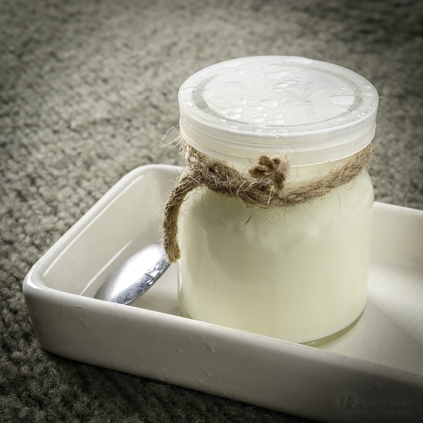

Ingredientes:
1 yogur natural
1 taza de aceite de girasol
2 tazas de azúcar (moreno o blanco, como tú prefieras)
3 tazas de harina
1 sobre de levadura
2 huevo
Limón o vainila para el aroma.
Azúcar glas
